Anhang zu: MATHEMATISCHE STATISTIK
BEWEIS: Verschiebungssatz
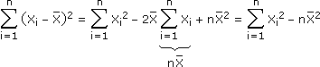
Bei einer diskreten Zufallsvariablen X entspricht das folgender Formulierung, die genauso für stetige Zufallsvariable gilt:
Var(X) = E(X2) – E(X)2
BEWEIS: E(S2) = σ2
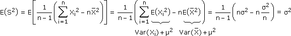
BEWEIS: Var(S2) = 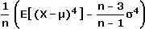
Yi = Xi–μ unabhängig  E(YiYjYk...) = E(Yi) E(YjYk...) = 0, falls i ≠ j,k,...
E(YiYjYk...) = E(Yi) E(YjYk...) = 0, falls i ≠ j,k,...
E(YiYjYk...) = E(Yi) E(YjYk...) = 0, falls i ≠ j,k,...
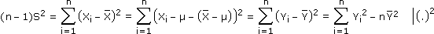
_____
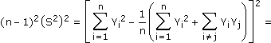
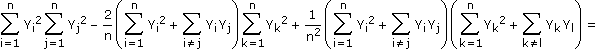
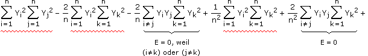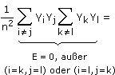
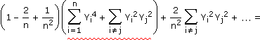
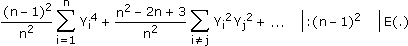
_____
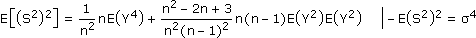
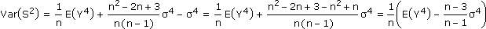
BEWEIS: X = N(μ;σ)
n – 1
σ2
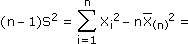
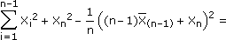
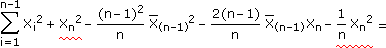
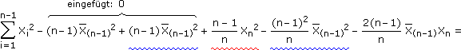
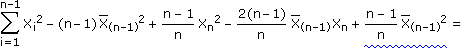
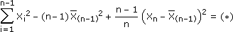
Wenn wir die soeben gewonnene Rekursionsformel wiederholt auf die letzte Zeile anwenden, erhalten wir schlussendlich:
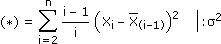
Das Besondere an obigen Summanden ist ihre Unabhängigkeit: Der Summand mit dem neu hinzu hinzugekommenen Xi schaut, wie weit dieses von X(i–1) entfernt ist. Die vorhergehenden Summanden informieren dementsprechend nur über die Streuung von X1,... Xi–1, was bei Normalverteilungen keinen Rückschluss auf die Lage von X(i–1) zulässt. Bleibt noch zu zeigen:
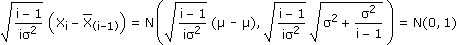
BEWEIS: X = N(μ,σ)
X – μ
S/√n
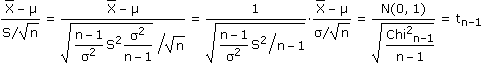
GÜTEFUNKTIONEN
Aufgabe: Eine Strangpresse stellt Kupferrohre her, deren Länge normalverteilt mit σ = 1,5 mm ist. Die Nullhypothese a) μ = 800 mm, b) μ ≥ 800 mm soll mit einer 25er-Stichprobe auf dem 5%-Niveau getestet werden. Bestimme die Gütefunktion, also die Power in Abhängigkeit von μ1.
X = Rohrlänge in cm = N(μ;1,5). Wir gehen vor wie in Aufgabe 5 ...
a) x1 = μ0 + Φ–1(0,025)
σ
√n
σ
√n
b) x1 = μ0 + Φ–1(0,05)
σ
√n
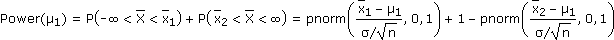
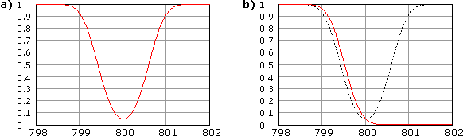
ERGÄNZUNG ZU AUFGABE 9:
Der Trick, unter der Wurzel pq durch X(1–X) abzuschätzen, macht aus der Umformung eine Kopfrechnung. Andernfalls hätten wir so zu rechnen:
Aufgabe: Bei einer Umfrage sprechen sich 162 von 600 zufällig ausgewählten Personen für eine bestimmte Partei aus. Bestimme näherungsweise über die Normalverteilung das beidseitig abgegrenzte 90%-Konfidenzintervall für den Stimmenanteil, den die Partei bei einer Wahl erzielen würde.
| X = Parteiwähler? |

|
1 = ja (Wahrscheinlichkeit p) 0 = nein (Wahrscheinlichkeit q) |
nX = Anzahl Parteiwähler in Stichprobe vom Umfang n = binomialverteilt ≈ N(np;√npq)
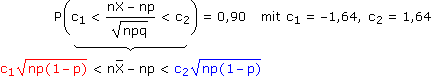
Wir suchen also alle p
 [0, 1], für die die schwarze Gerade zwischen der roten und blauen Kurve liegt:
[0, 1], für die die schwarze Gerade zwischen der roten und blauen Kurve liegt:Fall: c1<0 und c2>0 Fall: c1>0 und c2>0 Fall: c1<0 und c2<0
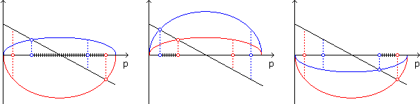
Dazu schreiben wir die Ungleichungen als Gleichungen, quadrieren und lösen sie:
n2X2 – 2n2Xp + n2p2 = c2np – c2np2 |:n
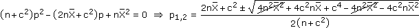
Wie oben illustriert kommt in allen Fällen (auch wenn wir es nur mit dem ersten zu tun haben) dasselbe heraus:
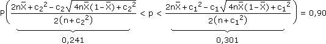